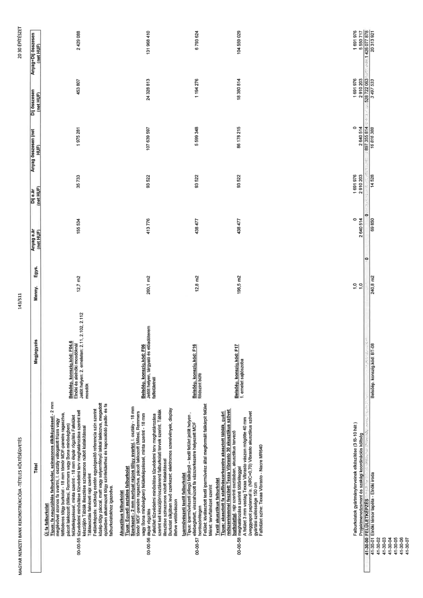

| Tétel | Megjegyzés | Menny. | Egys. | Anyag e.ár (net HUF) | Díj e.ár (net HUF) | Anyag összesen (net HUF) | Díj összesen (net HUF) | Anyag+Díj összesen (net HUF) |
|---|---|---|---|---|---|---|---|---|
| Új fa falburkolat Típus: fa nagytáblás falburkolat színazonos élkiképzéssel - 2 mm meglévővel azonos fa svartni, l. osztály válogatott frizes vagy féltükrös tölgy burkolat - 18 mm tömör MDF-panelre ragasztva, pácolt lakkozott (Milesi, Remmers vagy Bona minőségben) felületképzéssel, minta szerint - 18 mm ékpár rögzítés Falfelület tűzvédelmi minősítése tűzvédelmi terv meghatározása szerint kell készüljön Táblák illesztése színazonos nútolt kialakítással Táblasztás falnézeti rajz szerint Felületképzés: szükség esetén egységesítő referencia szín szerint közép tölgy páccal, matt vagy selyemfényű lakkal lakkozva, megadott épületben alkalmazott tölgy színfelülethez és kapcsolódó padló- és fa falburkolatokhoz igazodva. | Belsőép. konszig. kód: F04.6 Elnöki és alelnöki mosdóknál Jelölt helyen: 2. emeleten: 2.11, 2.102, 2.112 mosdók | 12,7 | m2 | 155 534 | 35 733 | 1 975 281 | 453 807 | 2 429 088 |
| Akusztikus falburkolat Típus: Egyedi asztalos falburkolat Szerkezet:- 2 mm európai rajzos tölgy svartni, I. osztály - 18 mm tömör MDF-panelre ragasztva, pácolt lakkozott (Milesi, Remmers vagy Bona minőségben) felületképzéssel, minta szerint - 18 mm ékpár rögzítés Falfelület tűzvédelmi minősítése tűzvédelmi terv meghatározása szerint kell készüljönasztalos falburkolati tervek szerint. Táblák illesztése színazonos nútolt kialakítással Burkolat síkjában lévő szerkezet: elektromos szerelvények, display illetve vetítővászon | Belsőép. konszig. kód: F06 Jelölt helyen: tárgyaló és előadóterem falfelületénél | 260,1 | m2 | 413 776 | 93 522 | 107 639 597 | 24 328 813 | 131 968 410 |
| Iparművészeti textil falburkolat Típus: iparművészeti jellegű falikárpit – textil felület jelölt helyen, elbeégetett, visszahúzott fa vázszerkezetre helyezett MDF hordozórétegen Felület: kiválasztott textil iparművész által megformált falikárpit felület Méret: terv/falnézet szerint | Belsőép. konszig. kód: F16 földszinti büfé | 12,8 | m2 | 438 477 | 93 522 | 5 599 348 | 1 194 276 | 6 793 624 |
| Textil akusztikus falburkolat Típus: akasztott fa stafivázszerkezetre akasztott táblák, gyári rendszeremmel feszített Texaa Vibrasto 30 akusztikus szövet burkolattal, rajz szerinti osztásban, akusztikus tervező meghatározása szerinti töltőréteggel A felület 3 mm vastag Texaa Vibrasto vászon mögötte 40 mm üveggyapot paplannal is. (NRC=0,70) Vibrasto akusztikus szövet gyártási szélessége 150 cm Falfelület színe: Texaa Vibrasto - Nacre MR640 | Belsőép. konszig. kód: F17 1. emelet sajtószoba | 196,5 | m2 | 438 477 | 93 522 | 86 178 215 | 18 380 814 | 104 559 029 |
| Falburkolatok gyártmányterveinek elkészítése (3 fő-10 hét ) | NaN | 1,0 | db | 0 | 1 691 976 | 0 | 1 691 976 | 1 691 976 |
| Projektmenedzsment és szakági koordinációs költség | NaN | 1,0 | db | 2 640 514 | 2 910 203 | 2 640 514 | 2 910 203 | 5 550 717 |
| 41-30-00 FELÜLETKÉPZÉS | NaN | NaN | NaN | 0 | 0 | 897 355 814 | 528 722 063 | 1 426 077 878 |
| 41-30-01 Elnöki térsor tapéta - Elnöki iroda | Belsőép. konszig. kód: BT-08 | 240,8 | m2 | 69 850 | 14 528 | 16 816 388 | 3 497 533 | 20 313 921 |
